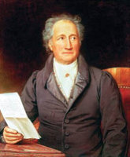

(1749 – 1832)

(Tablo: Joseph Karl Stieler, 1828)
Alman edebiyatının devi Johann Wolfgang von Goethe edebiyat dünyasına büyük katkılar yapmıştır. Bir yandan oyunlar ve şiirler de yazan Goethe, edebiyat tarihinin ilk "çok satan" romanı olan "Genç Werther'in Acıları" ile yaşadığı dönemde Avrupa kültürüne damgasını vurmuş bir yazardır.
Johann Wolfgang von Goethe (okunuşu: Yohan Vofgang fon Göthe) 28 Ağustos 1749 tarihinde Frankfurt'ta, bugün müze olarak kullanılan Goethe Evi'nde dünyaya gelmiştir. Babası Johann Caspar Goethe (1710-1782) bir hukukçu olmasına rağmen mesleğini icra etmemiş fakat oğlunun maddi sıkıntılar çekmeden hayatını sürdürmesini sağlamıştır. Goethe'nin annesi Catherina Elisabeth Goethe (1731-1808) ise Frankfurt'un varlıklı ve tanınmış ailelerinden birinin kızıdır. Goethe babasından edindiği disiplin, ciddiyet ve akıl unsuru ile annesinden edindiği hayal gücü, anlatma zevki ve duygu unsurunu geliştirme fırsatı bularak henüz çocukken dengeli bir bütünlükten nasibini almıştır. 1756'dan 1758 yılına kadar bir devlet okulunda öğrenim görmüştür. Aydın ve modern görüşleri olan Johann Caspar, oğluna özel öğretmenlerin ışığında ve kendi yol göstericiliği doğrultusunda küçük yaşlardan itibaren oldukça iyi ve kapsamlı bir eğitim imkanı sağlamıştır. Goethe'nin çalışma takviminde Fransızca, İngilizce, İtalyanca, Latince, Yunanca gibi dil öğrenimlerinin yanı sıra bilimsel konular, din ve çizim gibi alanlar da yer almıştır. Ayrıca çello ve piyano çalmayı, biniciliği, eskrimi ve dans etmeyi öğrenmiştir. Yazarı özellikle görsel sanatlara yaklaştıran olay, Yedi Yıl Savaşları olmuştur. Avusturya – Fransa birliğinin Frankfurt'u işgal etmesinden hemen sonra Goethe'lerin evi karargah binası yapılmıştır ve küçük Goethe güzel sanatlara düşkün komutanlar sayesinde Fransız sanatıyla tanışma fırsatı bulmuştur.
Dört yıl boyunca bir avukatlık bürosu işleten Goethe, 1771 yılı sonunda ise Geschichte Gottfriedens von Berlichingen mit der Eisernen Hand adlı eserini kağıda dökmüştür. Bundan sonra, 1773'te Götz von Berlichingen adlı dramasını yayımlamıştır. Gelecek nesillere kalacak olan bu etkili eseri, heyecanlı bir rağbet görmüş, "Fırtına ve Coşku[1] " döneminin temel yapıtı olarak kabul edilmiştir. Ortaçağ etkisiyle ve coşkunluk akımı ile işlenmiş bu eser dönemin en ünlü oyunlarından biri olmuş ve ortaçağa ilişkin kavramları yeniden su yüzüne çıkarmıştır.
Mayıs 1772'de babasının teşvik etmesiyle Wetzlar Alman Yüksek Mahkemesi'nde asistan olarak göreve başlayan Goethe, 1772 ve 73 yılları arasında tiyatro oyunları ve kitaplarla ilgilenerek Frankfurter Gelehrte Anzeige adlı kültür ve sanat dergisinde eleştri yazıları yazmış ve bu dönemde hukuk çalışmalarına daha az ilgi göstermeye başlamıştır. Bunun yerine Antik Çağ yazarlarıyla ilgilenmiş ve arkadaşı Kestner'in nişanlısı Charlotte Buff'a âşık olmuştur, ancak bu durum iki ay sonra tehlike arz etmeye başlayınca şehri alelacele terk etmiştir. Bir buçuk yıl sonra ise edindiği bu aşk tecrübesiyle diğer hayat tecrübelerini Genç Werther'in Acıları adlı romanında bir araya getirmiştir. Aşırı melankoli içeren bu eseri kısa zamanda Goethe'yi tüm Avrupa'da ün sahibi yapmıştır. Öyle ki romanın kahramanın giydiği elbiseler bile tüm Avrupa gençliğinde bir moda olarak yayılmıştır. Goethe kitabın müthiş başarısının ve buna ilişkin olarak o zamanın gereksinimlerini karşılayan Werther Etkisi[2]'nin sırrını açıklamıştır. Roman özellikle Avrupa'da yankı uyandırmış, gerçekçi anlatımıyla gençlerin aynı yola başvurmasına ve intihara yönelmesine neden olmuştur.
Wetzlar'den dönüşü ile Weimar'a seyahati arasındaki dönem, Goethe'nin en verimli dönemi olmuştur. Ünlü yapıtı Genç Werther'in Acıları'nın dışında, büyük destansı şiirler (Ganymed, Prometheus, Mohammeds Gesang), çok sayıda kısa drama (Das Jahrmarktsfest zu Plundersweilern und Götter, Heiden und Wieland) ile birlikte Clavigo ve Stella oyunlarını kaleme almıştır. Goethe aynı zamanda Faust serilerini ilk kez bu dönemde yazmıştır. Alman şair Klopstock'un od (kaside) üslubu ile Grek şair Pindaros'un övgü üslubundan yararlanarak doğadaki coşkun duyguları övgü şiirleriyle anlatmıştır. Belirli kalıplardan uzak kalan, serbest vezinli ses ahengine sahip bu yeni manzumeleri dünya edebiyatına Goethe kazandırmıştır. Bunlardan en önemlisi ise Prometheus olmuştur.
Goethe, 1786 yılında bunalıma girmiştir. Sevgilisi Charlotte von Stein ile olan ilişkisi onda giderek artan genel bir isteksizlik hali yarattığından mesleğindeki faaliyetlerini ümit ettiği şekilde yerine getirememiş ve saray yaşantısının zorluklarından rahatsızlık duymuştur. Fakat her şeyden önce bir kimlik bunalımı içerisine girmiştir. Artık kendi ölçütlerinin neler olduğunu bilemeden, kendi kendisiyle çelişir hale gelmiştir. Bu durumu İtalya'ya yapacağı bir seyahatle ortadan kaldırma yolunu seçmiştir. Eylül 1786'da sadece hizmetçisi Philipp Seidel'e haber vererek yola çıkmıştır. Bu yolculuk boyunca Goethe toplumsal baskılardan uzak durmak için takma bir adla seyahat etmiştir. Verona, Vicenza ve Venedik'te kaldıktan sonra, kasım ayında Roma'ya gelmiştir. Kasım ayınının sonuna kadar Roma'da vakit geçiren Goethe, ardından dört ay boyunca Napoli ve Sicilya'yı gezmiştir. Goethe, İtalya gezisi esnasında Roma ve Eski Yunan sanatının değişik stillerini ayrıntılı olarak araştırma fırsatını yakalamıştır. Bunlarla birlikte, İtalya'nın farklı, Akdeniz'e özgü tabiatı üzerinde durarak fikir üretmeye başlamıştır. İnsan anatomisi üzerine de kapsamlı çalışmalar yaparak bilimsel teoriler ortaya atmıştır. Siena, Floransa, Parma ve Milano şehirlerine yaptığı seyahatlerin ardından, iki yıl sonra Weimar'a geri dönmüştür.
1789 yılında, Goethe'nin olumsuz baktığı Fransız Devrimi Avrupa'yı sarsmıştır. Goethe yavaş ilerleyen yeniliklerden yana olmuş ve özellikle devrim sürecinde sergilenen aşırılıklardan nefret etmiştir. Goethe 1792 yılında Dük'ün isteği üzerine devrimci Fransa'ya karşı ilk ittifak savaşı için Dük'e refakat etmiştir. Üç ay boyunca sefaleti görmüş ve Fransa'nın zaferiyle sonuçlanan bu taarruza tanık olmuştur. Dükalık 1796 yılında Basel'in Prusya-Fransa Barış Antlaşması'na katılmıştır. Bu on yıllık barış dönemi ise savaş nedeniyle sarsılan Avrupa'da, Klasik Weimar'ın en parlak devrinin yaşanmasına imkan sağlamıştır.
1790'lı yıllardaki eserleri arasında, dönüşünden sonra kısa bir zamanda yazdığı ve antik dönemin erotik roman formundaki Roma Ağıtları da vardır. İkinci İtalya seyahati, nüktelerin ve Avrupa'nın genel durumu üzerine yazılmış olan mizahi şiirlerin bir derlemesi olan Venedik Epigramları'nın ortaya çıkmasını sağlamıştır. 1792–93 yıllarında Goethe, altı ölçülü dize şeklindeki Reineke Fuchs destanını düzenlemiştir.
Goethe bu dönemde Unterhaltung Deutscher Ausgewanderten (Alman Göçmenlerin Sohbetleri) adlı eserini ve dönemin güncel olaylarını altı ölçülü dize şeklinde ortaya koyan epik şiiri Hermann und Dorothea'yı (Hermann ve Dorothea) kaleme almıştır. Hazine Avcısı ve Büyücü Çığlığı adlı en tanınmış baladlarını da bu dönemde yazmıştır.
Goethe'nin eşi Christiane, uzun süren rahatsızlığının ardından 1816 yılında yaşamını yitirmiş ve Goethe 1817 yılında saray tiyatrosu yöneticiliğinden istifa etmiştir. Bu yıllarda Bitkibilimi Öğreniminin Tarihçesi adlı yapıtı ortaya çıkmıştır (1817). Bunu morfoloji, jeoloji ve mineroloji alanlarına ilişkin fikirlerine yer veren Genel Olarak Doğa Bilimlerine Dair başlıklı eseri ve küçük çaptaki romanlarının bir derlemesi 'Wilhem Meister'in Seyahat Yılları başlıklı eseri takip etmiştir..
1828 yılında Goethe'nin oğlu Karl August hayatını kaybetmiştir. Aynı yıl içerisinde Goethe, 'Faust' eserinin ikinci bölümünü tamamlamıştır. Muhtemelen kalp krizinden 22 Mart 1832'de ölmüş ve 26 Mart'ta Weimar Mezarlığı'nda toprağa verilmiştir.
Seçme Yapıtları: Heidenröslein (1771), Prometheus, (1773), Götz von Berlichingen (1773), Die Leiden des jungen Werthers (1774) Genç Werther'in Acıları (Can Yayınları, 2012), Faust (Sosyal Yayınları, 2001)